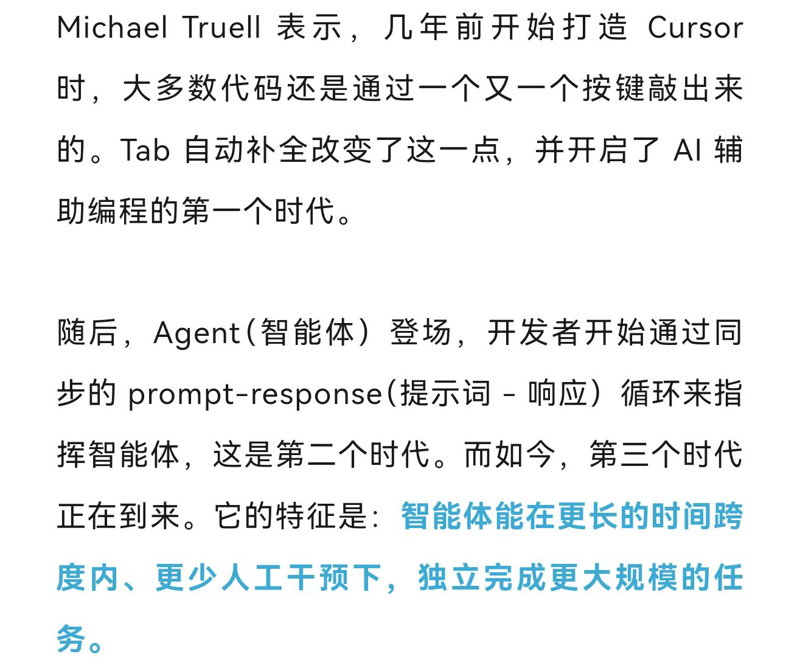

曾看到公众号推送，Cursor CEO Michael Truell提出一个观点：我们现在来到了AI辅助编程的第三时代。图片源自机器之心公众号，题为《Cursor：AI编程「第三时代」来了 》

图片来源：机器之心公众号
从我的角度举例，起初，我利用Codegeex辅助编程，靠tab补全，这算第一时代。生成式大模型百花齐放之后，通过复制粘贴大模型的代码，再多轮对话，不断返工调优，这属于迈入第二时代。
这个春节假，我也算望见了第二三时代的交界处，通过尝试不同的IDE与CLI，将自己的新想法落地成了项目的最小可行产品，打磨好想法之后，全程基本上就是回车键确认。
必然地，在使用的过程中，我的思想经历了很多的冲击，对新工具新技术的震撼，对自身定位的迷茫，对于人与AI之间关系的沉思（这里更侧重程序员和Coding agent的关系），对未来发展方向的初步思考。
种种思想上的起伏波动，让我有了写这些文字的念头，想分享一些拙见：
问题与想法，高于一切
首先，问题/想法高于一切。这里想分两点来讲，一是好的问题，二是好的提问。
先讲好的问题。现在的智能体没有"读心术"，仍是基于指令行动，没有人类的第一句话、第一个要求，智能体是不会行动的，更不会在你说话之前就给你做出所需产品。在这种情况下，用户能够提出好的问题或者想法，便至关重要。这从根本上决定了最终结果的上限，你的新想法越站得住脚，到了落地执行的阶段，就越能让你感受到coding agent的惊人执行力，换句话说，想法如果站不住脚，交由智能体执行时，自己也会感到处处受限，都不知道该怀疑自己的想法，还是该怀疑生成式大模型本身的局限，又或者是怀疑智能体框架的能力边界。
那么怎么让自己的想法"站得住脚"？怎么提出好的问题？我个人认为，是基于扎实的理论基础，想法不是凭空产生的，一定是经过调研论证，反复推敲才能得出。只有充分理清自己的想法，才能真正体会到智能体的强大之处。
这就很自然地引出了另一个点：好的提问，好的提问与好的问题并不相同，尽管在想法形成的时候，自己已经知道大致的路径，但如何与智能体沟通，明确边界，这又是另一门艺术。
在讲好的提问之前，想举一个例子：我自己在做项目时，先是很笼统地说"我要做一个什么什么项目，是用于解决什么什么的问题"，这样能做吗？作为toy尚可，但是经不起深究，各种bug接踵而至，于是我学聪明了，深入了解项目技术的前沿发展，到arXiv上找新论文，敲定最合适的落地方案与技术选型，再去Github上找到可供参考的优秀案例，然后让智能体开始执行，这一回的结果与预期的大体相符，尽管还有出入，但已经具备雏形。
我们不妨把好的想法视为目的地，好的提问作为导航，智能体作为交通工具
你说要去南京路，这太笼统，可能智能体会送你去上海的南京路，可能送你去"南京的某一条路"，可能你就在上海，但它开飞机去；可能你在海南，但它骑自行车去。蒙着眼不知道要走多久，不知道怎么去，不知道能不能到达目的地，这不是我们想要的。正确的导航是这样：我现在在长沙，想去上海的南京路。我要先打车到长沙南站，从长沙南站坐高铁抵达上海虹桥站，再由虹桥站坐地铁从南京东路站下车，然后抵达南京路，其中细节还有许多，就不再赘述了。
前沿的工程方法论也不断迭代，从Prompt engineering到Context engineering，最近又有Harness engineering，大家都在强调同一件事：怎么走在"正轨"上，包括工具调用，背景知识，命令权限，目的就是尽最大可能得到我们理想中的成果。
这不禁让我想起有机化学实验，规范实验条件，规范操作方式，规范反应物纯度，才能得到相对含量高的目标产物，但是，我们仍然无法预知最终准确结果，甚至可能阴差阳错搞出奇奇怪怪的副产物。这在某种意义上暗合了大模型常被批驳的"黑箱机制"，没有人完全知道它到底在做什么。
结合这两个类比，我觉得好的提问可以由这样的方法论产生：基于想法，先了解实现想法的方式有哪些，然后安排好最合适的实现顺序，分成各个阶段性任务，预想在每个阶段大致实现的预期，明确采用的技术栈与参考资料，当然，最重要的是有一颗恒心，因为没有人会知道智能体最终给你呈上的是怎样的杰作——生产周期越短，越会让人浮躁，这是我认为智能体时代最危险的地方，有了这些前提条件之后，我觉得就足以把这个好的想法，通过好的表述方式，提供给智能体，然后等待黑箱工作，它也许会产出我们理想中的产品，又或者，它只会弹出一个冲着你笑的小丑玩偶。
既然现有大模型是黑箱，无法预知结果，那么我们人类能做的只有反复许愿吗？
这里想引出一个对于"学习"本身的辩证思考，我们戏说"在人工智能发展如此快的时代，你只要学得够慢，就不用学了"，我不会质疑学习的重要性，但我对学习的方向感到过迷茫，看过评估，在不少评测和实际项目体验中，大模型已经能完成相当一部分中高级工程任务。（2026年3月写至此，不知后续水平如何），我以前一直认为：能看能写代码才是程序员的显著特征。但现在的大模型写得比我快，看得比我准，我可能需要几个月几年掌握一门编程语言，但这门语言已经作为世界知识存入大模型当中，能够拿来就用，那么作为in the loop的human，作为一个大学生，到底该学什么？在回答这个问题之前，我想讲讲我的思路。
平台的高度会让人错误地评估自身能力
受益于许多领导前辈与技术大拿的教诲，我深知：平台的高度会让人错误地评估自身能力。这句话适用于很多场景，放在此语境下，就是指：大模型的能力会让人错误地评估自己的编程水平和工作效率。
至少我在完成项目时，总会有一种忐忑感，因为代码不是我写的，但最后的责任主体是我，我享受着智能体带来的提效，却又惶恐自己能否承受住这份责任。
那么认清这一点之后，我才真正找到自己需要深入培养的能力——领导能力，再侧重一些，就是决策能力。
我之所以认为是决策能力，原因有两点：一是大模型的底层原理，Next-Token Prediction，讲得通俗一些，就是由过去预测未来，我们在整个会话中作出的每一次决策，都会对大模型的下一次输出质量产生影响。二是我自己的使用习惯，我往往会让大模型对我进行苏格拉底式的提问，而不是直接提出想法让大模型评判，因为曾经采用的RLHF这一训练方法，让大模型往往趋于肯定用户，这里不展开讲，只是希望我们都能审慎地对待大模型的评价。
行文至此，得出决策能力的论题，让我想到了一人公司（OPC）这个新兴事物，自己担任CEO，由智能体担任中层和底层，这无疑是在第三时代下，锻炼领导能力最好的办法。Multi-agent也好，Sub-agent也好，主智能体担任中层，指挥调配辅智能体，并行处理多任务，这已经是相对成熟的技术了，人类在其中扮演的角色就是一位领导：首先提出想法，与中层商定方案，最终做出决策。
在我眼里，领导力本身不是一项完全可量化的指标，而更多是靠成果支撑的指标。曾经和单位的前辈讨论过，领导力的培养，是一个强实践的过程，因此我们怎么培养领导力这个问题，在问出来的时候就会知道答案——那就是不断实践，不断试错，最后总结出带有自身风格的世界观和方法论。想分享一个我最常用的实践试错方法，就是superpowers这个skill，不可否认里面存在一些臃肿的设计，但可取之处还是很多，它会将我们的想法澄清，然后先创建spec作为开发的规范，待我审核后，再创建plan作为执行计划，这套方法和Kiro的设计理念Spec-driven（规范驱动）类似，尽可能地发挥人与智能体交互时的决策能力，在我的设想中，如果我们在看到计划方案时，能够敏锐地察觉出与实际想法的偏移，并且能提出明确改正意见，那么就初步具备一个领导者的素养了。
写了这么多，我想说的已经差不多到这里了，作为一个站在第三时代的大门口，懵懵懂懂的一个年轻人类，我希望的是：终有一天，我们能够将黑箱变为可解释的透明箱，从担心黑箱里弹出小丑玩偶的赌徒，变成新开发范式下的工程师。也许未来的程序员不再以亲手敲下每一行代码定义自己，而是以提出问题、设计系统、判断结果并承担责任来定义自己。
人类不会被取代，也不会消失，从钻木取火开始，我们就学会利用工具，让文明进步。